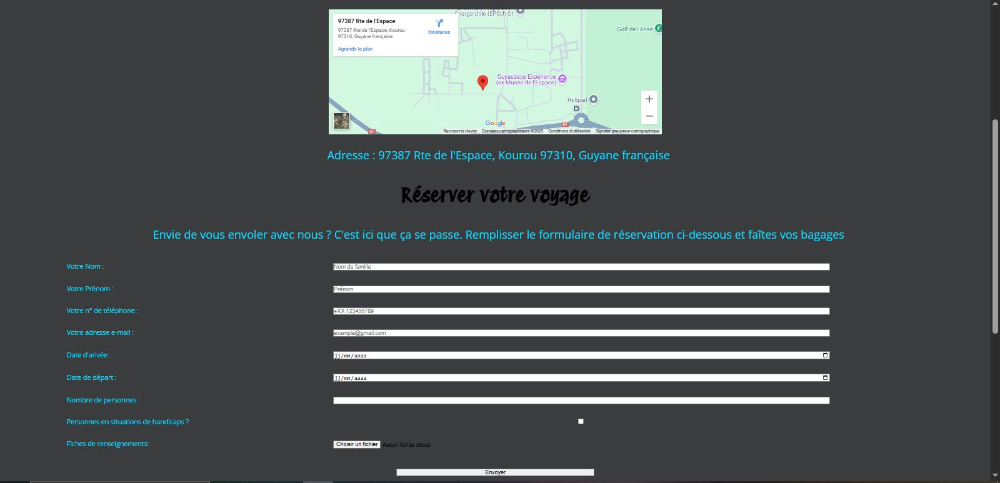
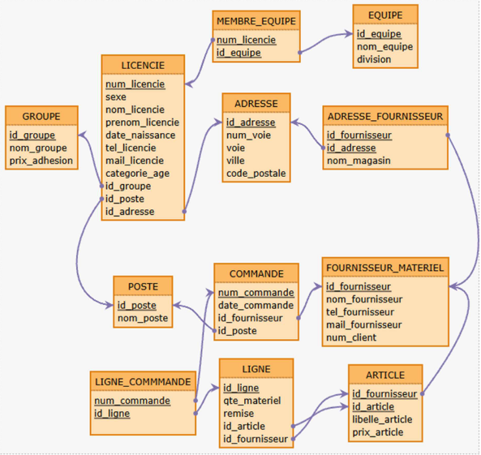
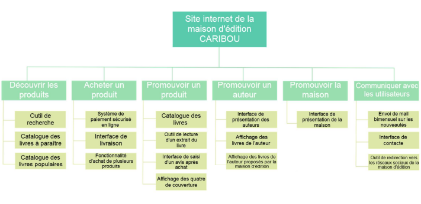

A.T.E.
Avoid the ennemies est un jeu vidéo 2D avec une interface graphique réalisé en C++. Le but du jeu est de récupérer toutes les pièces présentes dans la pièce sans toucher un ennemi. Nous avons utilisé la bibliothèque SDL. Nous partions d'une base à laquelle nous devions implémenter le chargement des différentes images tel que le niveau, les personnages ou encore les objets. Il fallait ensuite s'occuper du déplacement des personnages, notamment l'orientation de l'image du personnage et l'animation lors du déplacement de ce dernier. Nous avons programmer les ennemis pour qu'ils se déplacent de manière aléatoire dans le niveau. Il a aussi fallu cacher les objets récupérables lorsque le joueur les récupère. Enfin il fallait afficher un message en cas de victoire ou de défaite.
Membres du projet : Judicaël TO
VoyagerS
VoyagerS est un projet de site internet unqiuement en HTML et CSS. Le but était de mettre au point une agence de divertissement fictive, puis de construire le site de cette agence. Le cahier des charges demandait une page d'accueil, une présentant l'activité de l'agence et une dernière de contact, contenant un formulaire (on ne s'occuppe pas de la partie serveur). C'est un de mes premiers projets. Il n'est malheureusement pas abouti. C'est un projet qui devait être réalisé en binôme. Nous avons mis au point l'entité VoyagerS, mais mon partenaire s'est retiré peu après et j'ai donc réalisé le site par moi-même. VoyagerS est une agence de voyage spatiale.
Création d'une Base de Données pour le BACV
Ce projet est un projet en deux temps. D'une part il fallait trouver une entreprise ou une association et identifier leurs besoins, c'est-à-dire que pourrait améliorer dans cette entreprise ou cette association et comment le faire avec une base de données. J'ai donc pris contact avec le badminton club de Villepreux pour identifier les points à améliorer. Ces points sont la gestion des équipes d'interclubs et la gestion des commandes de materiels. J'ai réalisé le MCD avec Looping puis le Schéma Relationnel avec Mocodo, que vous pouvez retoruver ci-dessous. Dans un deuxième temps nous avons été mis en binôme. Dans cette partie nous devions choisir une de nos deux réalisations pour continuer. Nous avons choisi celle du Badminton Club de Villepreux et produit le dictionnaire de données, la Base de Données en SQL sur SQLite ainsi que des requêtes SQL permettant de récupérer des informations utiles, par exemple les factures supérieures à 1000€ ou encore le nombre de volants consommés sur une saison. Cliquez ici pour consulter le rapport de ce projet.
Membres du projet : Larry RANDRIANASOLO
Recueil de Besoins
Dans ce projet nous devions réaliser le cahier des charges d'une maison d'édition fictive souhaitant avoir un site internet. Nous avons réalisé l'analyse du micro et du macro environnement, une analyse comparative des besoins, une liste des fonctionnalités, un diagramme des intéractions et un organigramme technique. Retrouver ici le cahier des charges.
Membres du projet : Oumar DIALLO, Loic EKOUE KOVI, Clément SIRDEY
Installation d'un poste pour le développement
Ce projet consistait à installer un système d'exploitation sur un Raspberry Pi. Nous avons installé un système Raspberry Pi OS sur une carte SD. Puis sur le Raspberry Pi nous avons configuré une connexion SSH, installer un SGBD (DB Maria) puis créer une petite base de données. Vous pouvez consulter le rapport de ce projet.

Membres du projet : Loic EKOUE KOVI, Lowan LE MAT